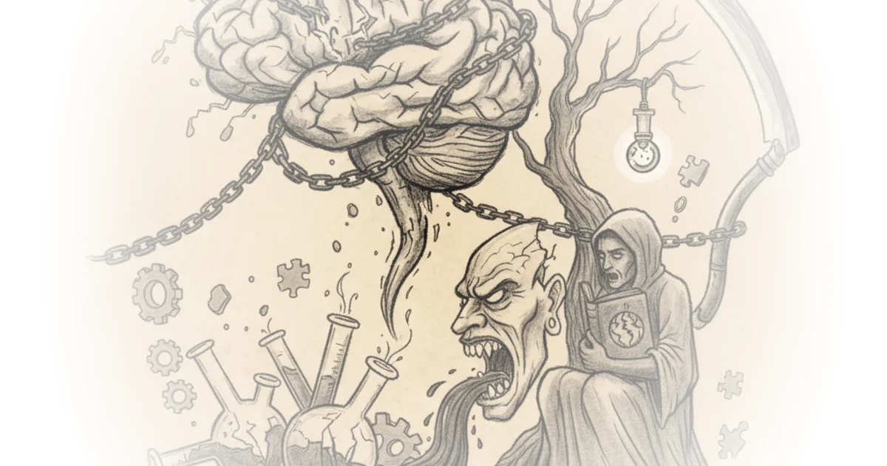

In a landscape often dominated by consensus, John Campbell presents a scathing indictment of modern medical institutions, arguing that the scientific method has been hijacked by political and financial interests. He claims that the suppression of dissenting voices regarding vaccine safety and origin theories is not an anomaly but a calculated, systemic strategy that mirrors totalitarian control. For busy professionals tracking the intersection of science and policy, this account offers a disturbing look behind the curtain of how established authorities allegedly silenced warnings about autoimmune reactions and clotting issues before they became public crises.
The Erosion of Scientific Inquiry
Campbell, a lifelong medical researcher and one of the most published doctors in the UK, anchors his argument in the fundamental definition of science: the pursuit of falsification rather than proof. He writes, "In science we don't try to prove things we actually try to prove the thing to be wrong." This distinction is crucial to his thesis, as he argues that the current medical establishment has abandoned this rigorous testing in favor of protecting specific narratives. He points to a disturbing trend where consultants are appointed without ever having written a single scientific paper, suggesting a leadership gap in understanding the limitations of the data they rely on.

The core of his argument is that this shift has created an environment where disagreement is punished rather than debated. Campbell notes that doctors who express unhappiness with vaccines or drugs face being "sacked by their management or to be struck off by the GMC or both." This framing is effective because it moves the conversation from abstract policy to concrete professional consequences, painting a picture of a profession under siege. Critics might note that regulatory bodies exist to protect patients from unproven or dangerous treatments, and that silencing misinformation is sometimes a necessary function of public health. However, Campbell's perspective suggests that the definition of "dangerous" has expanded to include any theoretical challenge to the prevailing orthodoxy.
"We see this as being a totalitarian attitude and so we wrote we wrote together the death of science."
Campbell illustrates this "death of science" by referencing his collaborative book, The Death of Science, which he claims has found an unexpected audience. He emphasizes that the book's success stems from its commitment to open debate, stating, "It's also a really fun read because there's bits in this you won't agree with which IS FINE. WELL, THAT'S THE WHOLE POINT." This approach highlights a perceived cultural shift where intellectual diversity is viewed as a threat rather than a strength. The argument gains weight from his personal history, including his work in oncology and HIV, which he says was initially dismissed by funding bodies as a phenomenon "confined to mice and will never extrapolate to the human condition."
Predicted Failures and the Silence of Authority
The most contentious part of Campbell's coverage focuses on specific predictions he and his colleagues made regarding the spike protein in vaccines. He asserts that warnings about the protein's homology to human epitopes were ignored by high-level officials, including Patrick Vallance. Campbell writes, "Valance Patrick valance will not engage as to why he ignored all this work that's turned out to be completely true because we warned you should never use the spike protein." He claims this oversight led to predictable adverse events, including clotting syndromes and autoimmune conditions like Guillain-Barré syndrome.
He argues that these were not random side effects but theoretical outcomes that were dismissed until they manifested. "We actually predicted all that. It's all came true," he states, citing the specific mechanism of platelet factor 4 engagement as a known risk that was overlooked. This section of the commentary is particularly potent because it relies on the logic of prior prediction rather than retrospective analysis. However, the medical community generally maintains that while rare adverse events are monitored, the overall benefit-risk profile of the vaccines remains overwhelmingly positive, a nuance that Campbell's narrative largely omits in favor of highlighting the failures of the system.
"I had no idea that we'd been lied to so much that all vaccinology is religion."
Campbell extends his critique to the broader scope of childhood immunization, quoting Robert F. Kennedy Jr. to question the necessity of a 72-vaccine schedule by age 15. He suggests that the medical field has devolved into a belief system, stating, "Medicine and vaccines has been a religion for far too long. And when science gets in the way, it it's pushed aside." This rhetorical move reframes the debate from one of epidemiology to one of dogma, appealing to readers who feel that institutional trust has been eroded. The comparison to the 1970s flu vaccine, which was halted due to a spike in Guillain-Barré cases, serves as a historical anchor for his argument that current safety concerns are being minimized.
The Cost of Suppression
Ultimately, Campbell's commentary is a call to recognize the human cost of this alleged suppression. He describes the experience of free thinkers in the medical field as feeling like "post office submasters," a metaphor for being ignored by a bureaucracy that refuses to listen. He points to the AstraZeneca vaccine's withdrawal of its own data as a rare moment of transparency, contrasting it with the broader pattern of obfuscation. "They never actually came clean," he says of the manufacturers, noting that they knew about the side effects but failed to communicate them fully.
His argument concludes with a warning about the long-term impact on future generations, suggesting that the current trajectory is detrimental to children and grandchildren. He emphasizes that the "people behind all this don't seem to be considered or care that the generations coming after us are going to be far more adversely affect affected." This emotional appeal underscores the urgency of his message, positioning the issue not just as a scientific debate but as a moral imperative.
"The NHS is religion."
Critics might argue that Campbell's reliance on anecdotal evidence and his dismissal of large-scale clinical trial data undermines the validity of his claims. The scientific consensus, supported by global health organizations, maintains that the vaccines have been rigorously tested and that the benefits vastly outweigh the risks. Nevertheless, Campbell's narrative resonates with those who feel that the mechanisms of scientific self-correction have been compromised by external pressures.
Bottom Line
John Campbell's most compelling argument lies in his detailed account of how specific theoretical warnings about vaccine mechanisms were allegedly ignored, turning a scientific debate into a story of institutional failure. His biggest vulnerability is the tendency to conflate legitimate scientific disagreement with a coordinated conspiracy, potentially oversimplifying the complex realities of public health decision-making. Readers should watch for how this narrative of "scientific suppression" evolves as more data on long-term vaccine safety becomes available and as the debate over medical autonomy continues to intensify.